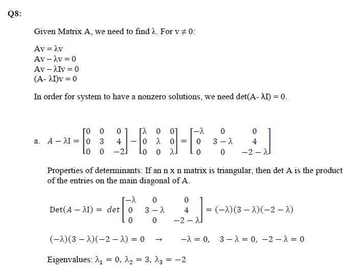

Work Experience
Reader/Grader
Computational Linear Algebra
September 2017 - Present
I was selected as a reader/grader for a computational linear algebra class that I took two years prior. Through the job, I create homework solutions for the homework sets every other week and grade homework, labs (in MATLAB), and tests.
Software Intern
Panzura
June 2016 - September 2016
I worked on a system to store system data collected from the company's products when tests are ran on the system. Two different methods, a data structure of Linked Lists and databases with SQL, were used to store the information. The email alert system to send error reports was modified to send information from this data collection rather than immediately after testing.

Software Intern
Panzura
June 2015 - August 2015
I helped develop a data model prototype for large data analysis for the company's product by focusing on the front end of the web application and connecting the data from a Python script that populated a database. Using Flask for AJAX calls between the UI and Python script and Git for source code control, data was extracted and displayed as graphs. HTML, Javascript, CSS, c3.js, and selectize.js were used for the UI.
Software Intern
Panzura
Jun 2014 - Sept 2014
I learned how to do simple white box test automation for the Web UI of the company's product. It required Jasmine.js for creating test cases and XML to store the defined test cases. I built an understand of the client/server relationship and how to implement simple quality assurance measures.